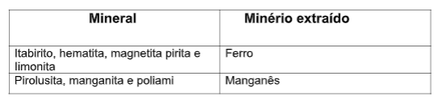

Capítulo 2: As desigualdades sócios-ecônomicas
Questão:Nesse capítulo, você irá pensar as questões que podem ser resolvidas! Faça uma leitura rápida dos títulos e subtítulos presentes no capítulo, após, anote em seu material quais deles são familiares a você. A partir disso, crie questões que você gostaria de resolver a partir desse estudo. Aquelas que você conseguir responder ao estudar nesse material, você pode anotar, aquelas que não conseguir responder, pergunte, pesquise, busque! Bons estudos!
Contextualizando - Construção civil e moradiaSair de casas precárias, em áreas de risco é o maior desejo da população brasileira de baixa renda. Ter a casa própria soa como um sonho impossível para esta população. Mas, a soma de esforços de todas as esferas de governo vem, aos poucos, rompendo barreiras e reduzindo, mesmo que aos poucos, o tão falado deficit de habitação. Bom para Todos mostra os programas de habitação popular do país.
O espaço geográfico passou a ser modificado quando o homem começou a produzir, ou seja, a extrair da natureza os elementos indispensáveis a manutenção da vida. Mas foi o modo de produção capitalista que determinou as mais profundas alterações nesse espaço.
CARACTERÍSTICAS DO CAPITALISMOApesar das profundas diferenças existentes entre os países capitalistas, algumas características básicas são comuns a todos eles, pois fazem parte do molde do sistema capitalista:
• Estrutura de propriedade — predomina a propriedade privada, pois a maioria dos meios necessários para a produção, tais como fábricas, terras, máquinas, usinas, portos, ferrovias, minas, etc., pertencem a agentes econômicos privados. No entanto, em muitos países, o Estado também é dono de muitos meios de produção. Atua como capitalista através de empresas estatais, principalmente em setores básicos e de infraestrutura.
• Objetivo - os agentes econômicos, privados ou estatais, buscam incessantemente a reprodução do capital, ou seja, a constante obtenção de lucros. A diferença fundamental é que uma empresa privada que opera no vermelho pode ir à falência, ao passo que uma estatal normalmente recebe subsídios governamentais (ou seja, recursos dos contribuintes) para manter-se.
• Mecanismo de funcionamento da economia — os agentes econômicos (indivíduos ou empresas, instituições públicas ou privadas) fazem seus investimentos guiando-se pela lógica do mercado, ou seja, com base na lei da oferta e da procura. Investem sempre com o objetivo de obter a maior rentabilidade possível, daí a concorrência se estabelecer em todos os setores.
No entanto, há também muitas outras monopolizadas, oligopolizadas, cartelizadas, nas quais, na prática, não há concorrência. O Estado, muitas vezes, intervém numa economia oligopolizada como agente planejador ou simplesmente como agente econômico. Esse processo, generalizado entre os países capitalistas, varia apenas quanto ao grau da intervenção.
• Relação de trabalho — predomina o trabalho assalariado. No entanto, ao lado dessa relação tipicamente capitalista convivem relações não-capitalistas de trabalho, principalmente em regiões subdesenvolvidas e rurais: parcerias, arrendamentos e, em regiões mais remotas, até relações ilegais, como a escravidão e o trabalho forçado por dívida.
• Meios de troca e instrumentos de crédito — o dinheiro (moeda metálica ou papel-moeda) é o principal meio de troca; surgiu no século VII a.C., como resultado da descoberta de técnicas de fundição, e facilitou o comércio. O cheque, outra moeda muito usada para as trocas na economia capitalista, é uma ordem escrita, nominal ou ao portador, que permite movimentar um fundo em dinheiro depositado num banco. Com os avanços na eletrônica e nas telecomunicações surgiu o cartão bancário, um “dinheiro virtual” que permite fazer pagamentos sem a intermediação de cheques ou dinheiro real. Mais recentemente, tornou possível movimentar fundos através de redes de computadores. Há ainda instrumentos de crédito que facilitam as trocas, como os cartões de crédito e as duplicatas.
• Relação social — há uma divisão de classes no interior da sociedade capitalista, com uma concentração de renda nos setores ou classes detentores do capital. Portanto, o capitalismo é marcado por desigualdades sociais, mais acentuadas nos países subdesenvolvidos. Ultimamente, porém, a distância entre ricos e pobres tem aumentado também nos países desenvolvidos.